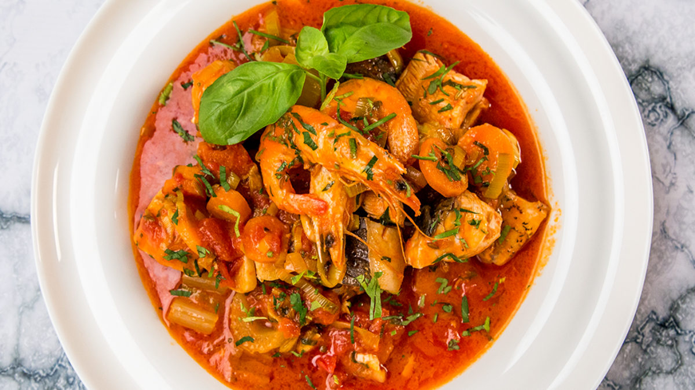

Prawn stew

Description
A generous serving of succulent, flavorful prawns coated in a delectable lemon
garlic butter sauce?
This is undoubtedly my preferred method of preparing prawns!
Ingredients
- Prawn
- Garlic
- White wine
- Butter
- Olive oil
- Lemon
- prawns with 1 tablespoon of the olive oil, salt and pepper for just 20 minutes, if you have time (otherwise skip it). Don’t marinate for longer as the salt will draw too much moisture out of the delicate prawn flesh and make them watery.
No garlic – I used to marinade the prawns with the garlic assuming it would infuse the flesh with garlic flavour. But actually, it doesn’t. Not with such a short marinating time. But you do end up with little burnt bits of garlic!
So these days, I add the garlic partway through cooking the prawns so it doesn’t burn. Better result, better garlic flavour!
- Sear in batches – Heat 1 tablespoon of olive oil in a large non stick pan over high heat. Place half the prawns in the pan and sear each side for 45 seconds, using tongs to turn individually.
Remove the first batch onto a plate then sear the remaining prawns for 45 seconds on each side.
TIP: don’t crowd the pan! Less prawns = better colour = easier to handle = won’t overcook.
- Garlic – Return the first batch of prawns into the pan then add the garlic and toss for 30 seconds.
- Wine – Add the wine, it will sizzle and steam when the wine hits the hot pan which is GOOD! This means it reduced down very quickly (~30 seconds) which is exactly what we want (fast cook = juicy prawns)
- Butter – Once the wine has mostly evaporated, add the butter and lemon juice then swirl the pan to make it melt.
- Parsley – As soon as the butter has melted, quickly toss through the parsley then transfer the prawns and all the butter sauce onto a plate.
Serve straight away, freshly cooked!